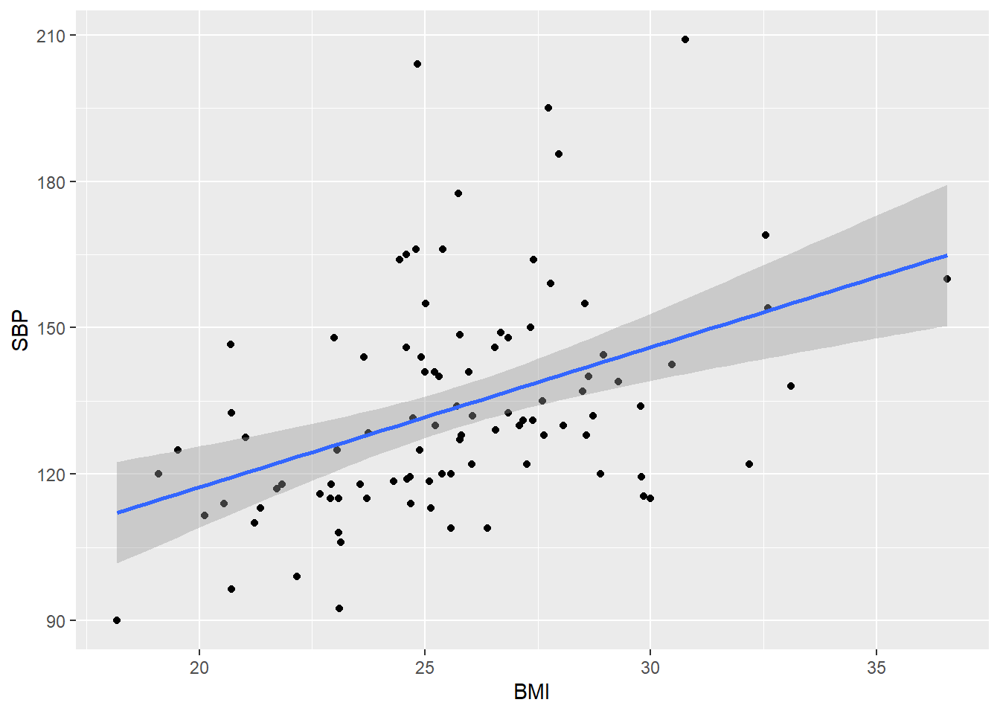
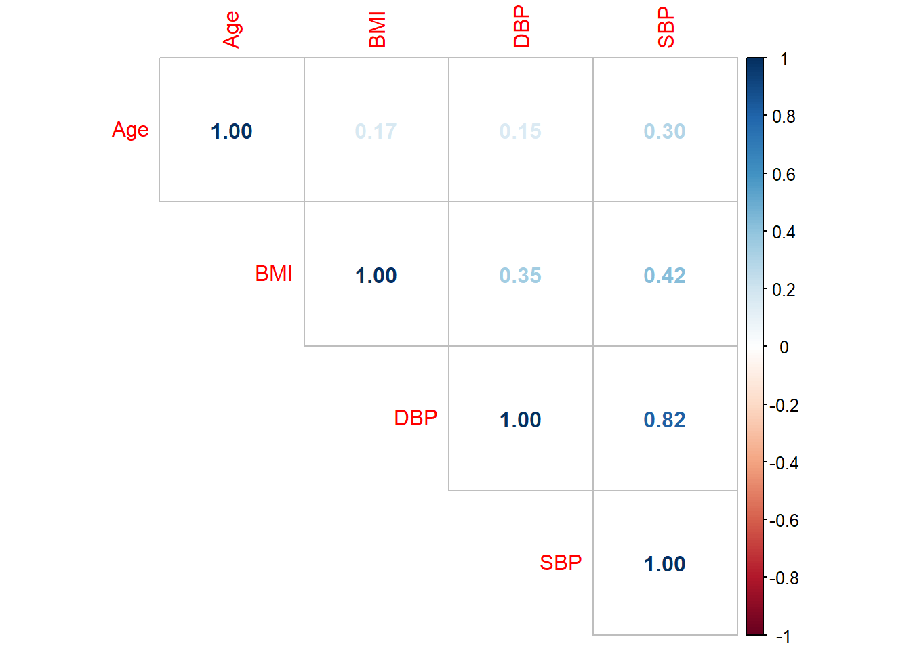

library(tidyverse)
library(readxl)The R Stats Package
Set up
https://github.com/CantStopWontStop/biostat_aes/blob/master/Sample.xlsx
https://github.com/CantStopWontStop/biostat_aes/blob/master/Drug%20trial.xlsx
StOB <- read_excel('data/Sample.xlsx')
StOB# A tibble: 95 × 16
UID Age BMI Smoker CVD Outcome Diabetic DBP Education Glucose
<dbl> <dbl> <dbl> <dbl> <dbl> <dbl> <dbl> <dbl> <dbl> <dbl>
1 4343801 60 24.7 0 0 0 0 79 1 78
2 8699070 49 24.7 0 1 1 0 82 2 60
3 5169197 55 28.9 0 1 1 0 80 4 68
4 4111268 61 26.8 0 0 1 0 74 2 91
5 9062570 52 23.1 1 0 0 0 70 2 61
6 6793529 50 20.7 1 0 0 0 72.5 2 77
7 621362 52 24.6 0 0 1 1 89 3 73
8 9059122 55 20.7 0 0 1 0 87 4 71
9 5081457 42 23.7 1 0 0 0 72 3 100
10 7796482 41 27.8 1 0 0 0 100 2 71
# ℹ 85 more rows
# ℹ 6 more variables: Heart <dbl>, Hypertension <dbl>, Sex <dbl>, Stroke <dbl>,
# SBP <dbl>, Cholestrol <dbl>t-tests
One-sample
Assuming as a researcher, you want to determine if the mean BMI of our [Sample] dataset is significantly different from that of a neighbouring population with mean BMI of 25kg/m2.
StOB$BMI [1] 24.66 24.68 28.89 26.84 23.09 20.72 24.59 20.72 23.72 27.78 32.60 30.47
[13] 29.29 26.38 24.88 27.34 24.44 27.09 25.21 25.78 23.09 28.96 26.06 27.18
[25] 25.74 25.40 18.18 27.61 25.23 32.54 19.09 21.84 26.57 24.60 23.14 30.00
[37] 28.57 20.54 25.38 23.57 26.84 28.63 26.54 25.09 25.57 21.02 27.38 25.58
[49] 24.30 29.79 23.65 24.99 27.64 28.07 20.69 22.92 25.31 22.90 29.84 32.18
[61] 25.81 20.12 24.92 28.49 33.11 23.10 24.59 24.80 26.68 25.78 23.05 23.75
[73] 27.97 24.83 24.73 21.35 21.71 22.98 27.26 25.13 27.73 26.04 21.22 28.72
[85] 25.71 30.77 25.97 22.17 27.40 22.67 28.54 29.77 36.57 25.01 19.53ttwt<-t.test(StOB$BMI, mu=25,
alternative = "two.sided")
print(ttwt)
One Sample t-test
data: StOB$BMI
t = 2.0021, df = 94, p-value = 0.04816
alternative hypothesis: true mean is not equal to 25
95 percent confidence interval:
25.00560 26.34956
sample estimates:
mean of x
25.67758 From the one-sample t-test results, the computed mean from the sample dataset is 25.7kg/m2 which is tested against the hypothetical value of 25kg/m2. R generates output for our null hypothesis of equivalence, we make use of the two-tailed alternate hypothesis of mean!=25 with its corresponding p-value 0.02857 which, if we are to be testing at a 5% significance level, we will reject our null statement.
Two-sample
With our previous example on BMI, now suppose we want to test if the BMI of our [Sample] dataset is different between males and females at 95% significance level, assuming the variance of BMI does not differ significantly between the two groups.
t.test(StOB$BMI~StOB$Sex, var.equal = TRUE,
alternative = "two.sided")
Two Sample t-test
data: StOB$BMI by StOB$Sex
t = -1.1716, df = 93, p-value = 0.2444
alternative hypothesis: true difference in means between group 1 and group 2 is not equal to 0
95 percent confidence interval:
-2.1359063 0.5507955
sample estimates:
mean in group 1 mean in group 2
25.26044 26.05300 t.test(StOB$BMI ~ StOB$Sex,
var.equal = TRUE,
alternative = "two.sided")
Two Sample t-test
data: StOB$BMI by StOB$Sex
t = -1.1716, df = 93, p-value = 0.2444
alternative hypothesis: true difference in means between group 1 and group 2 is not equal to 0
95 percent confidence interval:
-2.1359063 0.5507955
sample estimates:
mean in group 1 mean in group 2
25.26044 26.05300 The p-value of the test is 0.2925, which is greater than the significance level alpha = 0.05. We can conclude that the average BMI is not significantly different between males and females.
Paired
A paired t-test is a statistical procedure that tests whether the mean difference between two related groups is significantly different from zero. The values used in this test must be in pairs in two variables/columns. Only complete pairs are used in the analysis.
This can be done by using the same t.test(before , after , data = , paired = TRUE)but paired must be set to TRUE and then alternative can be added depending on the test.
drug_trial <- read_excel('data/Drug trial.xlsx')
drug_trial# A tibble: 60 × 7
PID Drug Disease SBP1 SBP2 DBP1 DBP2
<dbl> <dbl> <dbl> <dbl> <dbl> <dbl> <dbl>
1 1 1 1 152. 109. 95.7 67.7
2 2 1 1 148. 113. 93.9 69.8
3 3 1 1 140. 121. 87.4 75.5
4 4 1 1 152. 109. 95.9 67.2
5 5 1 1 137. 124. 85.8 77.7
6 6 1 1 141. 120. 89.0 73.8
7 7 1 2 147. 114. 92.9 70.6
8 8 1 2 144. 117. 90.3 72.4
9 9 1 2 147. 114. 92.9 70.3
10 10 1 2 141. 120. 88.1 74.1
# ℹ 50 more rowst.test(drug_trial$SBP1, drug_trial$SBP2, paired = TRUE)
Paired t-test
data: drug_trial$SBP1 and drug_trial$SBP2
t = 11.55, df = 59, p-value < 2.2e-16
alternative hypothesis: true mean difference is not equal to 0
95 percent confidence interval:
15.57445 22.10196
sample estimates:
mean difference
18.83821 Analysis of variance (ANOVA)
One-way ANOVA
One-way ANOVA is a statistical method to test whether the means of two or more groups are equal. This can be done by using the oneway.test() or aov()function
Example
From the StOB dataset, assuming we want to compare the mean systolic blood pressure across categories of education at 5% significance level, we use the following:
one.way <- aov(SBP ~ Education, data = StOB)
summary(one.way) Df Sum Sq Mean Sq F value Pr(>F)
Education 1 291 290.7 0.564 0.455
Residuals 91 46898 515.4
2 observations deleted due to missingnessFrom the output above, our focus is the F-statistic p-value of 0.535 which is not significant at 5% and so we fail to reject the null hypothesis of no differences in mean systolic blood pressures across education.
bmi.one.way <- aov(BMI ~ Education, data = StOB)
summary(bmi.one.way) Df Sum Sq Mean Sq F value Pr(>F)
Education 1 24.7 24.65 2.255 0.137
Residuals 91 995.1 10.94
2 observations deleted due to missingnessPost hoc tests for One-way ANOVA
The one-way ANOVA does not show exactly where differences in means are so post hoc tests may be carried out to investigate those differences. R provides post hoc tests such as Bonferroni, Scheffe, or Sidak, Tukeybut we will look at the Bonferroni test which is one of the more commonly used ones.
From our previous example, the function TukeyHSD()can be used for Tukey or pairwise.t.test(df$y, df$x, p.adj=‘bonferroni’)can be used for Bonferroni method.
pairwise.t.test(StOB$BMI,
StOB$Education,
p.adj='bonferroni')
Pairwise comparisons using t tests with pooled SD
data: StOB$BMI and StOB$Education
1 2 3
2 0.61 - -
3 1.00 1.00 -
4 1.00 1.00 1.00
P value adjustment method: bonferroni Two-way ANOVA
drug_trial <- read_excel('data/Drug trial.xlsx')
drug_trial# A tibble: 60 × 7
PID Drug Disease SBP1 SBP2 DBP1 DBP2
<dbl> <dbl> <dbl> <dbl> <dbl> <dbl> <dbl>
1 1 1 1 152. 109. 95.7 67.7
2 2 1 1 148. 113. 93.9 69.8
3 3 1 1 140. 121. 87.4 75.5
4 4 1 1 152. 109. 95.9 67.2
5 5 1 1 137. 124. 85.8 77.7
6 6 1 1 141. 120. 89.0 73.8
7 7 1 2 147. 114. 92.9 70.6
8 8 1 2 144. 117. 90.3 72.4
9 9 1 2 147. 114. 92.9 70.3
10 10 1 2 141. 120. 88.1 74.1
# ℹ 50 more rowsWe will use the [Drug trial] dataset. Suppose as a researcher you want to investigate if there are differences in mean systolic blood pressure after the intervention, across categories of the drug used and the type of disease suffered by the patient. To carry out this investigation in R using the two-way ANOVA, the syntax and output are as follows: aov(y ~ x1 + x2, data = data frame)
two.way <- aov(SBP2 ~ Drug + Disease, data = drug_trial)
summary(two.way) Df Sum Sq Mean Sq F value Pr(>F)
Drug 1 530.2 530.2 17.45 0.000102 ***
Disease 1 102.7 102.7 3.38 0.071192 .
Residuals 57 1731.5 30.4
---
Signif. codes: 0 '***' 0.001 '**' 0.01 '*' 0.05 '.' 0.1 ' ' 1From the output there is a significant association between systolic blood pressure and drug type (p<0.001) but not with disease (p=0.069).
Linear regression and Correlation
Scatter plots and regression lines

StOB %>%
ggplot(aes(x = BMI, y = SBP)) +
geom_point() +
geom_smooth(method = 'lm')
Pearson correlation
The Pearson correlation is used to show the strength of a linear relationship between continuous variables. To do a Pearson correlation analysis in R, here are the steps:
Pairwise
The correlation coefficient can be computed using the functions cor()orcor.test() but you can see that the correlation method is not specified here. So this code can be extended to include that cor(dfx2, method = c(“pearson”). Where dfx2 represents the two variables to be compared. We can simply compute the correlation for two variables Age and BMI as shown below.
cor(StOB$Age, StOB$BMI, method = "pearson")[1] 0.1650147Example
Using the [Sample] dataset, to generate a correlation matrix for the following continuous variables showing the number of observations and significance level for each entry. Also, we may want to compute the correlation for multiple variables, in such instances, we need to provide a matrix for the coefficient.
Step 1
The simplest way is to reduce the variables in the dataset to the variables of interest. In this instance, we assigned a new variable name d_red and combined the select() function and the negative sign(-) to remove variables that will not be covered under this analysis.
d_red <- StOB %>%
select(Age, BMI, DBP, SBP)
d_red# A tibble: 95 × 4
Age BMI DBP SBP
<dbl> <dbl> <dbl> <dbl>
1 60 24.7 79 120.
2 49 24.7 82 114
3 55 28.9 80 120
4 61 26.8 74 148
5 52 23.1 70 108
6 50 20.7 72.5 96.5
7 52 24.6 89 146
8 55 20.7 87 132.
9 42 23.7 72 115
10 41 27.8 100 159
# ℹ 85 more rowsStep 2
Then we can run our Pearson correlation analysis on the selected variables.
round(cor(d_red),
digits = 2 # rounded to 2 decimals
) Age BMI DBP SBP
Age 1.00 0.17 0.15 0.30
BMI 0.17 1.00 0.35 0.42
DBP 0.15 0.35 1.00 0.82
SBP 0.30 0.42 0.82 1.00Alternative presentation
There are several ways that the Pearson correlation analysis can be presented but let us try this method using the corrplot package which provides a matrix chart.
library(corrplot)
corrplot(cor(d_red),
method = "number",
type = "upper" # show only upper side
)
Linear Regression
Simple model
The syntax for a simple linear regression model using the lm()function takes the variables in the format: lm(y~ x, data = data frame)
Example
Building up from the relationship seen in the scatter plot of systolic blood pressure (SBP) and BMI, to generate the simple linear model, the command and output are:
lmSBP = lm(SBP~BMI, data = StOB) #Create the linear regression model
summary(lmSBP) #Review the results
Call:
lm(formula = SBP ~ BMI, data = StOB)
Residuals:
Min 1Q Median 3Q Max
-33.762 -11.483 -4.918 10.437 72.774
Coefficients:
Estimate Std. Error t value Pr(>|t|)
(Intercept) 59.9857 16.5776 3.618 0.000482 ***
BMI 2.8691 0.6404 4.480 2.12e-05 ***
---
Signif. codes: 0 '***' 0.001 '**' 0.01 '*' 0.05 '.' 0.1 ' ' 1
Residual standard error: 20.48 on 93 degrees of freedom
Multiple R-squared: 0.1775, Adjusted R-squared: 0.1687
F-statistic: 20.07 on 1 and 93 DF, p-value: 2.119e-05From the output, the p-value shows the explanatory variable BMI is significantly associated with the outcome SBP. The R-squared value is the coefficient of determination which tells us that 18.36% of the variability in the outcome (SBP) is explained by the independent variable (BMI). The adjusted R-squared is more useful in the adjusted model which will be covered subsequently. These measures tell us this is quite a good model. Additionally, coefficients in the model- which in this case are the mean changes in the outcome as the explanatory variable(s) change. For BMI, for every additional unit increase in BMI, the outcome SBP will also increase by 2.89mmHg. Linear models of this kind are additive so a negative coefficient will mean the outcome decreases as the explanatory variable increases.
A t-test is carried out on each coefficient in the model and the p-value determines if changes observed in the coefficient are significant or not.
Multiple model
As indicated earlier we could fit a linear model for multiple predictors which also take the lm()function but this time we will have more than one variable: The variable form will take lm(y~ x1+x2.., data = data frame)
Example
Building on the simple model example, suppose now we want to adjust for the effects of age on the relationship between the outcome (SBP) and BMI, the syntax and output are:
lmSBP2 = lm(SBP~BMI+Age, data = StOB) #Create the linear regression model
summary(lmSBP2) #Review the results
Call:
lm(formula = SBP ~ BMI + Age, data = StOB)
Residuals:
Min 1Q Median 3Q Max
-41.316 -12.890 -3.642 8.512 66.250
Coefficients:
Estimate Std. Error t value Pr(>|t|)
(Intercept) 37.5953 18.3705 2.047 0.0436 *
BMI 2.6048 0.6311 4.127 8.05e-05 ***
Age 0.5722 0.2255 2.538 0.0128 *
---
Signif. codes: 0 '***' 0.001 '**' 0.01 '*' 0.05 '.' 0.1 ' ' 1
Residual standard error: 19.91 on 92 degrees of freedom
Multiple R-squared: 0.2313, Adjusted R-squared: 0.2146
F-statistic: 13.84 on 2 and 92 DF, p-value: 5.548e-06Logistic Regression
Binary Logistic Regression
glm(y ~ x, family=binomial(logit), data=dataframe)
glm = model (general linear model)
y = outcome variable
x= explanatory variable
family = type (binomial)
data = data frame
StOB# A tibble: 95 × 16
UID Age BMI Smoker CVD Outcome Diabetic DBP Education Glucose
<dbl> <dbl> <dbl> <dbl> <dbl> <dbl> <dbl> <dbl> <dbl> <dbl>
1 4343801 60 24.7 0 0 0 0 79 1 78
2 8699070 49 24.7 0 1 1 0 82 2 60
3 5169197 55 28.9 0 1 1 0 80 4 68
4 4111268 61 26.8 0 0 1 0 74 2 91
5 9062570 52 23.1 1 0 0 0 70 2 61
6 6793529 50 20.7 1 0 0 0 72.5 2 77
7 621362 52 24.6 0 0 1 1 89 3 73
8 9059122 55 20.7 0 0 1 0 87 4 71
9 5081457 42 23.7 1 0 0 0 72 3 100
10 7796482 41 27.8 1 0 0 0 100 2 71
# ℹ 85 more rows
# ℹ 6 more variables: Heart <dbl>, Hypertension <dbl>, Sex <dbl>, Stroke <dbl>,
# SBP <dbl>, Cholestrol <dbl>hyp_chol <- glm(Hypertension ~ Cholestrol, family=binomial(logit), data=StOB)
summary(hyp_chol)
Call:
glm(formula = Hypertension ~ Cholestrol, family = binomial(logit),
data = StOB)
Coefficients:
Estimate Std. Error z value Pr(>|z|)
(Intercept) -0.192027 1.245679 -0.154 0.877
Cholestrol 0.003964 0.005133 0.772 0.440
(Dispersion parameter for binomial family taken to be 1)
Null deviance: 113.91 on 90 degrees of freedom
Residual deviance: 113.30 on 89 degrees of freedom
(4 observations deleted due to missingness)
AIC: 117.3
Number of Fisher Scoring iterations: 4lbw_data <- read_excel('data/Low birth weight.xlsx')
lbw_data# A tibble: 189 × 10
id low age lwt smoke ptl ht ui ftv bwt
<dbl> <dbl> <dbl> <dbl> <dbl> <dbl> <dbl> <dbl> <dbl> <dbl>
1 85 0 19 182 0 0 0 1 0 2523
2 86 0 33 155 0 0 0 0 3 2551
3 87 0 20 105 1 0 0 0 1 2557
4 88 0 21 108 1 0 0 1 2 2594
5 89 0 18 107 1 0 0 1 0 2600
6 91 0 21 124 0 0 0 0 0 2622
7 92 0 22 118 0 0 0 0 1 2637
8 93 0 17 103 0 0 0 0 1 2637
9 94 0 29 123 1 0 0 0 1 2663
10 95 0 26 113 1 0 0 0 0 2665
# ℹ 179 more rowsui_age <- glm(ui ~ age, family=binomial(logit), data=lbw_data)
summary(ui_age)
Call:
glm(formula = ui ~ age, family = binomial(logit), data = lbw_data)
Coefficients:
Estimate Std. Error z value Pr(>|z|)
(Intercept) -0.77663 0.95045 -0.817 0.414
age -0.04260 0.04137 -1.030 0.303
(Dispersion parameter for binomial family taken to be 1)
Null deviance: 158.56 on 188 degrees of freedom
Residual deviance: 157.45 on 187 degrees of freedom
AIC: 161.45
Number of Fisher Scoring iterations: 4exp(cbind(OR=coef(hyp_chol), confint(hyp_chol))) OR 2.5 % 97.5 %
(Intercept) 0.8252846 0.06887115 9.498825
Cholestrol 1.0039723 0.99406358 1.014456exp(cbind(OR=coef(ui_age), confint(ui_age))) OR 2.5 % 97.5 %
(Intercept) 0.459953 0.07238992 3.060479
age 0.958294 0.88002794 1.035863